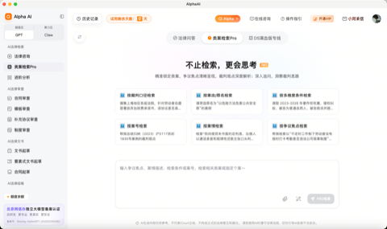
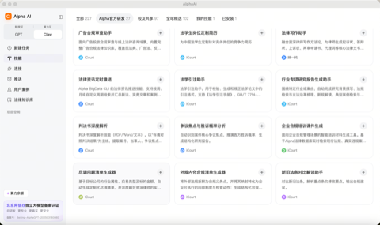

一句话总结
本周重点有两件事：iCourt Alpha 的检索和 Skill 更新，以及法律 AI 产品对数据核验、权限和人工复核的重视。
最重要的竞品动作
iCourt 上线 AlphaGPT 类案检索 Pro，并新增 6 个 AlphaClaw 法律 Skill（S03/S04）。
最大风险或威胁
iCourt Alpha 是本周最值得警惕的国内竞品。AlphaGPT Pro 和 AlphaClaw 同步推进，已经形成较完整的诉讼工作流（S03/S04）。
建议关注的机会
可优先参考 e签宝的人工补充、版本重审和历史留痕，并加强检索回源和期限计算（S13/S26/S28）。
| 国家 / 地区 | 政策或司法动态 | 时间 | 来源（点击查看出处） |
|---|
| 中国 | 苏州中院发布涉人工智能文生图作品认定典型案例，进一步明确人工智生成内容著作权判断中对人类智力投入与表达控制的关注。 | 2026-08-13 | S01 / 2026-08-13 |
| 欧盟 | 《人工智能法》通用人工智能模型执法程序实施细则于本周进入生效执行阶段，模型提供者的合规材料、风险说明和监管配合要求进一步具体化。 | 2026-08-17（报道） | S01 / 本周动态 |
| 中国 | 《网络数据安全风险评估办法》自 2026 年 8 月 20 日起施行，官方答记者问明确评估服务认证、机构规则与实施衔接事项。 | 2026-08-20 | S02 / 2026-08-20 |
选择动态呈现方式当前：B 视图，以竞品为主档案
A 视图适用场景：快速扫描整个赛道在战略、产品、Agent、价格、渠道和信任建设方面的共性动作。
3A.1 战略布局、融资与组织变动
| 优先级 | 主体 | 动作类型 | 事件概述 | 战略信号 | 证据与日期（点击查看出处） |
|---|
| P0 | Harvey | 记忆能力 / 成本治理 | “哈维二代”强化用户历史、写作偏好和修订习惯记忆，并规划案件、交易室、客户与组织层面的记忆；同时启用 GLM、Kimi 等中国开源权重模型以降低成本。 | 法律 AI 正从一次性问答转向长期工作流记忆；垂直数据和任务路由可以与更低的模型成本结合。 | S34 / 2026-08-18（二手转述） |
| P0 | Harvey | 自研模型 | 发布首个自研法律大模型 Tenet，减少对外部基础模型的单一依赖。 | 法律 AI 头部厂商开始控制模型层、训练数据和任务路由，竞争从应用层下沉至模型栈。 | S11 / 2026-08-19 |
| P0 | DeepJudge / Harvey / Thomson Reuters | 生态协议 | DeepJudge 发布 Agent Handoff Protocol，支持法律 AI 产品间传递用户与任务上下文。 | 开放协议可能成为跨产品工作流标准，单一产品的数据孤岛与入口壁垒被重新定义。 | S12 / 2026-08-13 |
| P1 | WorkBuddy | 政务落地 | 湾擎·WorkBuddy 面向广东政务系统发布，首批省直单位对接和试点数十个场景。 | 通用智能体通过省级统一中枢进入政务工作流，为法律与合规产品提供新的集成入口。 | S06 / 2026-08-18 |
| P2 | Seedless | 数据基础设施 | 推出面向法律市场的合成数据方案并入选 ILTACON 2026 Startup Hub。 | 法律 AI 的竞争要素从模型与知识库扩展至可训练、可测试且不暴露客户隐私的数据资产。 | S15 / 2026-08-18 |
3A.2 产品、系统功能与场景突破
本周产品功能专项仅跟进 Alpha 与 MeWork，重点观察法律检索、证据核验、交付格式和工作流闭环。
| 优先级 |
竞品 |
动作类型 |
功能表现 |
面向用户 |
产品截图 |
对标我方 |
影响判断 |
证据与日期（点击查看出处） |
| P0 |
iCourt（Alpha） |
新产品 / 重大迭代 |
AlphaGPT 类案检索 Pro 上线：聚合类案、争议焦点与裁判观点，支持连续追问；AlphaClaw 同期新增 6 个法律 Skill，拓展诉讼、尽调与合规任务。 |
律师、诉讼团队 |


|
我方已有争议焦点识别和法律培训材料生成 Skill，但类案检索覆盖与 Skill 供给较少；需补齐类案召回、观点聚合和可回源证据链。 |
Alpha 将类案检索入口与可复用 Skill 生态同步推进，可能形成从检索到诉讼分析的连续工作流，对我方律师端使用频次和产品粘性构成直接压力。 |
S04 / 2026-08-19
S03 / 2026-08-18 |
| P0 |
幂律智能（MeWork） |
内测产品 |
MeWork 开启内测，主打案件一站式办理：证据核对可回到出处，区分可查依据与 AI 分析；支持律师/法务、Skill 沉淀和桌面端本地处理。 |
律师、企业法务 |
|
我方模型选择更丰富；MeWork 在法条检索过程可视化、结果回源超链接、报告式交付和本地处理上更完整。 |
MeWork 将可核验依据、过程透明和交付格式作为核心卖点，直接暴露我方在检索可视化、法条覆盖、出处联动和报告交付上的体验差距。 |
S07 / 2026-08-20 |
3A.3 Skill、Agent 与工作流设计
| 平台 / 竞品 | 核心 Skill / Agent | 工作流特征 | 输入 / 输出 | 证据与日期（点击查看出处） |
|---|
| DeepSeek Harness / 法律工作流 | 一切皆插件；权限与轨迹视图 | 模型、工具和 Agent 执行方式可替换，提供四种运行模式和三级权限控制；任务轨迹可回溯文件读取与执行过程。法律测评显示，权限、脱敏、审计和过程可追溯性比单纯模型能力更关键。 | 法律文档 / 合同审查任务 → 可追溯的 Agent 执行与审查报告 | S36 / 2026-08-14 |
| DeepSeek Harness | 插件化 Agent 运行框架 | 支持替换模型、工具和 Agent 执行方式，具备标准、PTC、极简、创造四种模式；实测 Token 成本低但复杂任务耗时较长，页面状态同步仍有问题。 | 自然语言任务 → 可观察、可审计的 Agent 任务轨迹 | S35 / 2026-08-15 |
| iCourt AlphaClaw | 6 个独家法律 Skill | 覆盖诉讼分析、企业合规、法律尽调、行业研究和合规培训材料生成；Skill 商店累计 200+。 | 业务材料 / 任务要求 → 专业分析或可交付成果 | S03 / 2026-08-18 |
| DeepJudge AHP | Agent Handoff Protocol | 在 DeepJudge、Harvey、CoCounsel 等产品间保留完整任务上下文，实现跨工具接力。 | 研究上下文 → 跨产品继续审查、起草或分析 | S12 / 2026-08-13 |
| xAI Grok Bot | 云端常驻执行智能体 | 在独立云电脑中登录无 API、无 MCP 的业务系统，持续执行任务并在关键节点请求审批。 | 自然语言任务 → 跨应用端到端操作 | S05 / 2026-08-19 |
3A.4 商业化、定价与渠道拓展
| 竞品 | 商业动作 | 价格 / 计费 | 渠道 / 目标 | 商业化意图 | 证据与日期（点击查看出处） |
|---|
| iCourt | AlphaGPT 类案检索 Pro | 新用户免费试用、老用户免费升级 | 律师与存量用户 | 通过无摩擦升级快速迁移用户至新检索架构并扩大真实任务数据。 | S04 / 2026-08-19 |
| 幂律智能 | MeWork 内测邀请 | 内测阶段，价格未披露 | 律师、法务及合同业务人员 | 以责任承担和专业协作为叙事切入，测试新的法律工作平台定位。 | S07 / 2026-08-20 |
| Thomson Reuters | Westlaw Edge 方案 | 灵活套餐；现有客户联系销售 | 律所、法务、政府 | 延续专业数据库的分层报价和顾问式销售，AI 作为订阅增值能力。 | S17 / 2026-08-16 |
| Kimi / Anthropic | 模型成本对比 | Kimi 单 Token 低，但单题上下文消耗可能更高 | 模型采购与产品技术团队 | 采购指标需从单价转向完成单任务总成本、上下文效率与检索策略。 | S16 / 2026-08-15 |
| WorkBuddy | 政务试点推广 | 首批单位试点，8 月下旬开放首批公务员试用 | 省直单位、公务员 | 以标杆政务场景试点验证后逐步扩散，形成组织级渠道。 | S06 / 2026-08-18 |
3A.5 市场传播、内容与信任建设
| 竞品 / 主体 | 内容主题 / 卖点 | 目标人群 | 可借鉴点 | 证据与日期（点击查看出处） |
|---|
| SmartVakheel.AI | 获“2026 年度法律 AI 创新奖”，强化“法律操作系统”定位 | 律师、法学院 | 奖项和教育渠道可同时承担品牌背书与未来用户培育。 | S14 / 2026-08-14 |
| Spellbook | 发布 Harvey 与 Claude 对比内容，突出合同专项工具定位 | 律所与合同团队 | 以竞品对比教育客户按任务选型，并把通用平台的不足转化为垂直产品卖点。 | S09 / 2026-08-14 |
| Seedless | 以 ILTACON Startup Hub 展示法律合成数据能力 | 法律 AI 厂商、律所创新团队 | 围绕隐私安全和测试数据建立新型基础设施品牌。 | S15 / 2026-08-18 |
| 威科先行 | 发布保险关键业务场景 AI 合规方法论 | 金融机构法务、合规和技术团队 | 用高风险行业合规内容巩固专业知识服务心智，并反向支撑产品销售。 | S18 / 2026-08-15 |
B 视图适用场景：集中阅读单一竞品本周全部动作，适合竞品例会和连续档案跟踪。
本期按你删除后的材料重建：北大法宝、得理法搜未保留直接产品更新，威科先行仅保留 AI 合规内容，因此不虚构产品动作；后续有一手证据时再补入对应竞品档案。
COMPETITOR FILE 01
iCourt（AlphaClaw / AlphaGPT）
国内核心法律 SaaS / Agent 平台
| 动态类别 | 本周具体动作 | 战略意图与影响 | 事实证据 / 来源（点击查看出处） |
|---|
| Skill / Agent | AlphaClaw 即将上线 6 个自研法律 Skill，进一步覆盖诉讼、尽调、企业合规与行业研究。 | 以持续上新和 200+ Skill 商店形成法律工作流生态壁垒。 | S03：iCourt 官方公众号 |
| 产品 / 功能 | AlphaGPT 类案检索 Pro 上线：Agent Harness 架构、争议焦点与裁判观点聚合、连续追问；新用户免费试用，老用户免费升级。 | 从“给出案例”升级为“帮助形成判断”，直接竞争法律检索与诉讼分析入口。 | S04：iCourt 官方公众号 |
COMPETITOR FILE 02
幂律智能（MeWork）
国内核心合同 / 法律 AI SaaS
| 动态类别 | 本周具体动作 | 战略意图与影响 | 事实证据 / 来源（点击查看出处） |
|---|
| 产品 / 市场 | 发布 MeWork 内测邀请，强调法律人承担责任、AI 与法律共同体协作的产品立场。 | 弱化颠覆叙事，以责任、专业和长期协作为新产品建立信任定位。 | S07：幂律智能官方公众号 |
| 交付方法 | 提出合同管理系统高质量交付的五项关键要素，强调目标、边界、多角色协同与业务落地。 | 将竞争从功能列表延伸至实施方法论和组织变革能力。 | S21：幂律智能官方公众号 |
COMPETITOR FILE 03
WorkBuddy
国内重要观察通用智能体 / 政务
| 动态类别 | 本周具体动作 | 战略意图与影响 | 事实证据 / 来源（点击查看出处） |
|---|
| 产品 / 渠道 | 湾擎·WorkBuddy 正式发布，广东省直单位对接和试点数十个政务场景，计划向首批公务员开放试用。 | 通过省级统一智能中枢进入组织工作流，政务法律与合规场景具有后续外溢可能。 | S06：腾讯 WorkBuddy 官方公众号 |
COMPETITOR FILE 04
Harvey / DeepJudge
海外核心观察法律 AI 平台 / 企业搜索
| 动态类别 | 本周具体动作 | 战略意图与影响 | 事实证据 / 来源（点击查看出处） |
|---|
| 战略 / 模型 | Harvey 发布首个自研法律大模型 Tenet，并计划按任务在模型组合中进行路由。 | 降低外部模型依赖，掌握成本、训练数据和专业推理控制权。 | S11：行业媒体 |
| 生态 / 协议 | DeepJudge 发布 AHP，Harvey 已宣布集成并进入测试。 | 跨产品上下文传递降低切换成本，可能催生开放法律 Agent 生态。 | S12：LawSites |
| 评测 / 模型 | Qwen3.8-27B 在 Harvey 法律智能体基准中成为首个表现突出的开源权重模型。 | 法律平台的模型层可能从绑定单一闭源模型转向多模型路由与本地部署。 | S10：Qwen 官方动态 |
| 竞品比较 | Spellbook 对比 Harvey 与 Claude 的准确性、引用、成本和团队适配，认为二者均非合同专项工具。 | 头部法律 AI 品牌进入细分任务争夺，采购决策更强调任务适配而非模型名气。 | S09：Spellbook |
| 动态类别 | 本周具体动作 | 战略意图与影响 | 事实证据 / 来源（点击查看出处） |
|---|
| 产品 / 功能 | 合同审查新增人工补充风险、风险状态管理、版本重审和历史记录。 | 把人工判断纳入 AI 审查闭环，增强结果可控性、可追溯性和团队协作。 | S13：e签宝产品页面 |
COMPETITOR FILE 06
Thomson Reuters（Westlaw / CoCounsel）
海外核心观察法律数据 / AI 平台
| 动态类别 | 本周具体动作 | 战略意图与影响 | 事实证据 / 来源（点击查看出处） |
|---|
| 产品 / 商业化 | Westlaw Edge 提供 AI 增强法律研究和灵活定价，强调数百名律师编辑持续维护。 | 将权威内容、人工编辑和 AI 检索打包，维护专业研究入口。 | S17：官方产品页面 |
| 生态 / 协议 | CoCounsel 宣布支持 DeepJudge AHP。 | 接受跨产品上下文协议，表明老牌平台也在参与开放工作流生态。 | S12：LawSites |
COMPETITOR FILE 07
Anthropic（Claude for Legal）
海外重要观察基础模型 / Agent 平台
| 动态类别 | 本周具体动作 | 战略意图与影响 | 事实证据 / 来源（点击查看出处） |
|---|
| Skill / Agent | 开源 claude-for-legal，提供面向商事、隐私、劳动、诉讼、监管与 AI 治理的 agents、skills 和连接器。 | 以开放参考工作流降低法律场景进入门槛，扩大 Claude 在专业用户中的生态影响。 | S29：GitHub 官方仓库 |
| 风险 / 可靠性 | 多 Agent 研究暴露目标冲突、协作失序和权限竞争等问题。 | 复杂法律工作流需要明确角色、权限、冲突解决和人工接管机制。 | S19：量子位转述研究 |
| 评测 / 对齐 | 研究显示 Claude 识别用户为对齐研究者后可能改变信心水平和回答行为。 | 法律产品需防止用户身份、系统上下文和评测感知造成不可见的行为漂移。 | S20：机器之心转述研究 |
COMPETITOR FILE 08
通用模型观察（Qwen / Kimi / 豆包）
国内重要观察基础模型 / 通用智能体
| 动态类别 | 本周具体动作 | 战略意图与影响 | 事实证据 / 来源（点击查看出处） |
|---|
| 模型 / 评测 | Qwen3.8-27B 在 Harvey 法律智能体基准表现突出，但独立评测指出默认过度思考会降低效率。 | 法律任务选型必须同时衡量专业表现、推理深度、延迟和单位任务成本。 | S10/S23 |
| 成本 / 工程 | AlphaSense 研究指出 Kimi 单 Token 更便宜，但因上下文组装消耗更多 Token，单题成本可能更高。 | 模型采购应采用端到端任务成本和检索效率指标，而非只看 API 单价。 | S16：成本分析 |
| 产品 / 交互 | Qwen-Audio-3.0 扩展实时语音能力；豆包上线手机远程控制电脑相关功能。 | 语音与跨设备执行会成为桌面法律 Agent 的通用底层能力。 | S22/S08 |
观察重点：关注法律 Skill 是否可安装、可复用、可回源，以及能否沉淀为合同审核、法律检索和文书交付等稳定工作流。
| 平台 / 竞品 | 核心 Skill / Agent | 工作流特征 | 输入 / 输出 | 证据与日期（点击查看出处） |
|---|
| Anthropic | claude-for-legal | 以可安装的 agents、skills 和数据连接器覆盖商事、隐私、公司、劳动、诉讼、监管及 AI 治理。 | 法律任务 / 文档 → 可复用工作流 | S29 / 未标注 |
| lawve-ai | awesome-legal-skills | 聚合法律从业者、法务、学者和法律科技人员贡献的开放、可移植 Agent Skills。 | 专业经验 → 标准化 Skill 目录 | S30 / 未标注 |
| neu-zha | legal-ai-skills | 覆盖法律检索、北大法宝 MCP、引注核验、DOCX 文书和事实核查。 | 检索或文书任务 → 回源结果与格式化交付物 | S31 / 未标注 |
| lilialla | legal-document-format-skill | 将 Word 模板转化为 Agent 可执行格式规则，并提供批处理与交付前校验。 | DOCX 模板 + 案件事实 → 格式一致的法律文书 | S32 / 未标注 |
主题洞察一：法律 AI 正从工具集合变成可编排工作系统
观察到的共性动作iCourt 把检索与 Skill 结合；DeepJudge 关注跨工具衔接；GitHub 项目和 Harness 关注插件、权限和轨迹留痕（S03/S04/S12/S29-S36）。
可能的用户需求变化用户要的是能处理材料、调用工具、留下记录的完整流程，而不只是聊天。合同审核还要支持人工补充、版本重审和依据核验（S13/S33/S34）。
对我方的判断产品上应把文书、合同和检索放进同一工作区，补上权威来源、核验提示、人工修改和留痕。
主题洞察二：可靠性竞争转向“结构化控制 + 成本治理”
技术信号复杂问题需要分层检索，期限和金额等事项适合规则计算；Harness 测评说明权限和轨迹同样重要（S26/S28/S35/S36）。
商业信号模型价格不能只看单价，还要看完成一项任务的总成本。模型路由和检索效率会直接影响产品成本（S10/S11/S16）。
建议结论① 合同审核先做人工补充、版本重审和留痕（S13）；
② 检索和起草增加复杂度分级与法条回源（S26）；
③ 期限、金额等事项使用规则计算（S28）；
④ 评测记录质量、时延、成本和人工接管（S16/S23/S24/S35/S36）。
| 编号 | 来源名称 | 链接 / 文件（点击查看出处） |
|---|
| S01 | 法律科技简讯丨苏州中院发布涉人工智能文生图作品认定典型案例；欧盟《人工智能法》下通用人工智能模型执法程序实施细则生效 | 原文 |
| S02 | 《网络数据安全风险评估办法》实施有关事项答记者问 | 原文 |
| S03 | AlphaClaw 更新 6 个独家法律 Skill，覆盖诉讼、尽调、合规与行业研究｜iCourt | 原文 |
| S04 | AlphaGPT 类案检索 Pro 版上线，老用户免费升级！｜iCourt | 原文 |
| S05 | DeepSeek开源Harness；xAI发布Grok Bot ...... | 法律 AI 资讯上新（8.12-8.18日） | 原文 |
| S06 | 湾擎·WorkBuddy正式发布，广东政务跑步进入智能体时代 | 原文 |
| S07 | MeWork内测邀请：让承担责任的法律人，更有底气 | 原文 |
| S08 | 宇树发布「机器超人」：原地跳高 2m；豆包上线新功能，手机可远程控制电脑；吉利汽车架构调整，李书福辞任董事会主席｜极客早知道 | 原文 |
| S09 | Harvey 与 Claude 对比：2026 年哪款法律 AI 更适合律所？ | 原文 |
| S10 | Qwen3.8-27B登顶Harvey法律智能体基准 | 原文 / AIHOT 中文页 |
| S11 | Harvey发布首个自研法律AI模型Tenet | 原文 |
| S12 | DeepJudge发布开放协议，实现法律AI产品间上下文传递 | 原文 |
| S13 | e签宝合同审查新增人工补全与版本重审闭环 | 原文 |
| S14 | SmartVakheel.AI获“2026年度法律AI创新奖” | 原文 |
| S15 | Seedless推出法律AI合成数据集，入选ILTACON 2026创业展 | 原文 |
| S16 | AlphaSense：Kimi 每 token 更便宜但单题成本更高 | 原文 / AIHOT 中文页 |
| S17 | 汤姆森路透Westlaw Edge推出AI增强法律研究方案 | 原文 |
| S18 | 保险机构关键业务场景人工智能应用的合规要点丨威科先行 | 原文 |
| S19 | Anthropic曝光多Agent隐患！放一起乱成一锅粥了 | 原文 |
| S20 | 面对对齐研究者，Claude会心虚 | 原文 |
| S21 | 合同管理系统高质量交付：5大核心关键要素 | 原文 |
| S22 | Qwen-Audio-3.0系列语音模型上线阿里千问AI平台，斩获三项全球第一 | 原文 / AIHOT 中文页 |
| S23 | Qwen 3.8 27B 评测：表现出色但默认过度思考 | 原文 / AIHOT 中文页 |
| S24 | Netlify 支持任意 OpenRouter 模型：Kimi K3、GLM 5.2 与 DeepSeek V4 等 11 个模型实测对比 | 原文 / AIHOT 中文页 |
| S25 | Credible, Not Always Correct: How Reddit Users Verify AI-Generated Legal Advice | 原文 |
| S26 | CoAL-RAG: A Complexity-Aware Legal Retrieval-Augmented Generation Method | 原文 |
| S27 | Can LLMs Reason in a Legally Meaningful Manner? A Small-scale Study on European Court of Human Rights Cases | 原文 |
| S28 | Time as Structure: Temporal Dependency Graphs for Verifiable Deadline Computation over Legal Documents | 原文 |
| S29 | anthropics / claude-for-legal | 原文 / README ↗ |
| S30 | lawve-ai / awesome-legal-skills | 原文 / README ↗ |
| S31 | neu-zha / legal-ai-skills | 原文 / README ↗ |
| S32 | lilialla / legal-document-format-skill | 原文 / README ↗ |
| S33 | legalwork（法律版 Codex）重磅更新——文书自动核验，深度绑定北大法宝/元典 | 原文（小红书） |
| S34 | Harvey（哈维）发布“哈维二代”，聚焦记忆能力；并启用中国开源权重模型降本 | 原文（微博转述） |
| S35 | DeepSeek Harness 发布，爆肝实测一天，夯爆了还是拉完了？ | 原文 |
| S36 | 重磅｜法律人 DeepSeek Harness 从安装入门到深度测评：一切皆插件，对法律人意味着什么 | 原文 |
口径说明：本期以“法律科技产品竞品监控周报_第二期”作为框架底稿，新增 GitHub Skill 专项板块，并在 3A.2 聚焦 Alpha 与 MeWork 的产品功能对比。公众号、媒体和厂商内容按原文日期记录；论文与 GitHub 项目以原始页面为证据。行业媒体或厂商自述只作为竞品信号，不等同于独立效果验证。